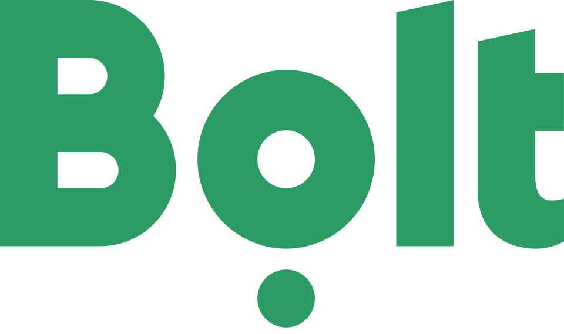

홈 > 브랜드 매거진 > Air up
Air up
에어업(air up)은 독일 뮌헨에 본사를 둔 음료 스타트업으로, 향(스멜)만으로 맛을 입히는 리필형 물병 시스템을 만든다. 물에는 설탕·첨가물·향료를 전혀 넣지 않고 순수한 물만 담은 채, 빨대 위에 끼운 향 포드(pod)에서 피어오르는 향을 들이마시는 방식으로 마치 맛있는 풍미수를 마시는 듯한 감각을 구현한다. 후각으로 맛을 빚어내는 독창적 발상으로 유럽 전역에서 빠르게 확산된 무가당 하이드레이션 브랜드다.
산업 분야 기술·전자 · 공개 등급 편집 검수 · 브랜드 평가 4 ★
Ai
Air up
한눈에 보는 브랜드
에어업(air up)은 독일 뮌헨에 본사를 둔 음료 스타트업으로, 향(스멜)만으로 맛을 입히는 리필형 물병 시스템을 만든다. 물에는 설탕·첨가물·향료를 전혀 넣지 않고 순수한 물만 담은 채, 빨대 위에 끼운 향 포드(pod)에서 피어오르는 향을 들이마시는 방식으로 마치 맛있는 풍미수를 마시는 듯한 감각을 구현한다.
후각으로 맛을 빚어내는 독창적 발상으로 유럽 전역에서 빠르게 확산된 무가당 하이드레이션 브랜드다.
브랜드 관점
에어업의 핵심은 혀가 아니라 코로 맛을 인지하는 레트로네이절(retronasal) 후각 원리다. 인간이 느끼는 풍미 대부분이 사실은 입안에서 코 안쪽으로 넘어가는 향에서 비롯된다는 점에 착안해, 물 자체는 손대지 않고 향만으로 딸기·복숭아 같은 맛을 뇌가 인식하게 만든다.
이 발상은 무가당·무첨가라는 건강 가치와 향 포드 교체라는 새로운 음용 경험을 동시에 제공하며 음료 카테고리의 통념을 흔들었다. 디자인 아카이브 관점에서 에어업은 미니멀한 텀블러 물병과 모듈식 향 포드라는 두 축으로 정체성을 구축했고, 절제된 본체 위에 색으로 향을 구분하는 포드 체계가 제품군 전체를 하나의 시각 언어로 묶는다.
D2C 패키징 또한 깔끔한 무채색 기조와 향별 색상 코드로 일관되게 설계되어, 향이라는 비가시적 가치를 손에 잡히는 디자인 시스템으로 번역한다.
시작과 성장
에어업의 출발점은 2016년, 레나 윤스트(Lena Jüngst)와 팀 예거(Tim Jäger)가 제품 디자인을 공부하던 시절로 거슬러 올라간다. 두 사람은 설탕을 넣지 않고도 풍미를 즐길 수 있는 물을 만들겠다는 목표 아래, 물에 무언가를 타는 대신 향으로 맛을 입히는 후각 기반 발상을 구체화했다.
이 아이디어는 윤스트·예거를 포함한 창업 팀으로 이어져 독일 뮌헨에서 회사로 결실을 맺었고, 2019년 정식으로 시장에 제품을 선보였다. 출시 초기 불과 몇 주 만에 수만 개의 물병이 온·오프라인에서 팔려 나가며 향으로 맛을 내는 물병이라는 낯선 개념이 시장에서 통한다는 사실을 입증했다.
이후 오스트리아·스위스·네덜란드·프랑스·영국 등 유럽 여러 나라로 빠르게 발을 넓혔다.
브랜드 아이덴티티
에어업의 디자인 정체성은 미니멀한 텀블러형 물병과 빨대 끝에 끼우는 향 포드의 조합으로 압축된다. 본체는 군더더기 없는 무채색 실루엣으로 절제되어 있고, 그 위에 향마다 색을 달리한 포드가 시각적 강조점이 된다.
매끈하고 현대적인 폼은 물을 채워 거듭 쓰는 리필 사용성을 전제로 설계되어, 제품 자체가 무가당·지속가능이라는 브랜드 가치를 형태로 드러낸다. D2C 패키징 역시 동일한 절제미를 따르며, 향별 색상 코드를 통해 다양한 라인업을 하나의 일관된 시스템 안에 정돈한다.
제품과 서비스
핵심 제품은 빨대가 달린 리필형 텀블러 물병과 그 빨대 위에 장착하는 향 포드다. 포드 안에는 과일·향신료·허브에서 추출한 천연 향이 반투과성 섬유에 담겨 있어, 빨대를 통과하는 공기가 향을 머금어 입안으로 전달한다.
물에는 아무것도 더하지 않으므로 무설탕·무칼로리·무첨가가 유지되며, 다양한 과일·허브 향 포드로 라인업이 구성된다.
사람들
현재 상태
에어업은 유럽 전역에서 자리잡은 뒤 2022년 미국 시장에 진출하며 활동 범위를 넓혔다. 글로벌 음료 기업 펩시코를 비롯한 투자자들의 지원을 받아 매출이 크게 성장했고, 향 기반 하이드레이션이라는 카테고리를 대표하는 D2C 브랜드로 확장을 이어가고 있다.
타임라인
BI/CI 변천사
확인된 BI/CI 이미지가 아직 없습니다.
함께 읽을 브랜드
 기술·전자 · 편집 검수미니
기술·전자 · 편집 검수미니미니는 작은 크기를 약점이 아니라 개성과 태도의 언어로 바꾼 자동차 브랜드다. 미니의 디자인은 실용성만을 말하지 않는다. 작음, 경쾌함, 도시적 감각을 결합해 차체...
 기술·전자 · 자료 기반라인
기술·전자 · 자료 기반라인라인(LINE)은 2011년 네이버 일본법인이 출시한 모바일 메신저로, 일본·대만·태국 등에서 국민 메신저로 자리 잡았다. 현재 운영사는 LY Corporation이...
 기술·전자 · 매거진 완성뱅앤올룹슨
기술·전자 · 매거진 완성뱅앤올룹슨뱅앤올룹슨은 오디오를 가전제품이 아니라 공간 속 오브제로 다루는 브랜드다. 소리의 품질뿐 아니라 제품이 놓이는 방식, 재료, 형태, 조작 경험까지 디자인의 일부로 통...
 기술·전자 · 편집 검수Analog
기술·전자 · 편집 검수Analog애널로그(Analog)는 엣지 AI(Edge-AI)를 기반으로 인간의 잠재력을 확장하는 데 초점을 맞춘 기술·전자 분야 기업으로, 스페인 바르셀로나 기반 디자인 스튜...

기술·전자 · 편집 검수BoltBolt은 온라인 쇼핑의 결제 단계를 빠르고 단순하게 만드는 체크아웃·원클릭 결제 핀테크 브랜드다. 디자인 아카이브 관점에서 Bolt이 주목받는 이유는 2023년 런...
Eq
Equator
기술·전자 · 편집 검수EquatorEquator는 2025년에 기록된 Technology 계열의 브랜드 아이덴티티 사례입니다. For The People가 아이덴티티 작업의 디자이너로 기록되어 있습니...
Pe
Peckish
기술·전자 · 편집 검수PeckishPeckish는 2025년에 기록된 Digital Products & Services 계열의 브랜드 아이덴티티 사례입니다. Someone가 아이덴티티 작업의 디자이너...
Pi
Pigment AI
기술·전자 · 편집 검수Pigment AIPigment AI는 2025년에 기록된 AI Brands 계열의 브랜드 아이덴티티 사례입니다. Fiasco가 아이덴티티 작업의 디자이너로 기록되어 있습니다. 공개...